|
5.
Process Improvement
5.5. Advanced topics 5.5.9. An EDA approach to experimental design 5.5.9.10. DOE contour plot
|
|||||||||
| Optimal setting |
The "near-point" optimality setting is the intersection of the
steepest-ascent line with the
optimal setting curve.
Theoretically, any (X1, X3) setting along the optimal curve would generate the desired response of Y = 100. In practice, however, this is true only if our estimated contour surface is identical to "nature's" response surface. In reality, the plotted contour curves are truth estimates based on the available (and "noisy") n = 8 data values. We are confident of the contour curves in the vicinity of the data points (the four corner points on the chart), but as we move away from the corner points, our confidence in the contour curves decreases. Thus the point on the Y = 100 optimal response curve that is "most likely" to be valid is the one that is closest to a corner point. Our objective then is to locate that "near-point". |
||||||||
| Defective springs example |
In terms of the defective springs contour plot, we draw a line from
the best corner, (+, +), outward and perpendicular to the Y = 90,
Y = 95, and Y = 100 contour curves. The Y = 100
intersection yields the "nearest point" on the optimal response curve.
Having done so, it is of interest to note the coordinates of that optimal setting. In this case, from the graph, that setting is (in coded units) approximately at
|
||||||||
| Table of coded and uncoded factors |
With the determination of this setting, we have thus, in theory,
formally completed our original task. In practice, however, more
needs to be done. We need to know "What is this optimal setting, not
just in the coded units, but also in the original (uncoded) units"?
That is, what does (X1=1.5, X3=1.3) correspond to in the units of the original data?
To deduce his, we need to refer back to the original (uncoded) factors in this problem. They were:
|
||||||||
| Uncoded and coded factor settings |
These factors had settings-- what were the settings of the coded
and uncoded factors? From the original description of the problem,
the uncoded factor settings were:
|
||||||||
| Diagram |
To determine the corresponding setting for (X1=1.5, X3=1.3), we thus
refer to the following diagram, which mimics a scatter plot of
response averages--oven temperature (OT) on the horizontal axis and
quench temperature (QT) on the vertical axis:
 The "X" on the chart represents the "near point" setting on the optimal curve. |
||||||||
| Optimal setting for X1 (oven temperature) |
To determine what "X" is in uncoded units, we note (from the graph)
that a linear transformation between OT and X1 as defined by
OT = 1600 => X1 = +1
|-------------|-------------|
X1: -1 0 +1
OT: 1450 1525 1600
and so X1 = +2, say, would be at oven temperature OT = 1675:
|-------------|-------------|-------------|
X1: -1 0 +1 +2
OT: 1450 1525 1600 1675
and hence the optimal X1 setting of 1.5 must be at
|
||||||||
| Optimal setting for X3 (quench temperature) |
Similarly, from the graph we note that a linear transformation between
quench temperature QT and coded factor X3 as specified by
QT = 120 => X3 = +1
|-------------|-------------|
X3: -1 0 +1
QT: 70 95 120
and so X3 = +2, say, would be quench temperature = 145:
|-------------|-------------|-------------|
X3: -1 0 +1 +2
QT: 70 95 120 145
Hence, the optimal X3 setting of 1.3 must be at
QT = 127.5 |
||||||||
| Summary of optimal settings |
In summary, the optimal setting is
uncoded: (OT = 1637.5 degrees, QT = 127.5 degrees)
uncoded: (OT = 1637.5, CC = 0.7 %, QT = 127.5) |
||||||||
| Options for next step |
In practice, we could either
|
||||||||